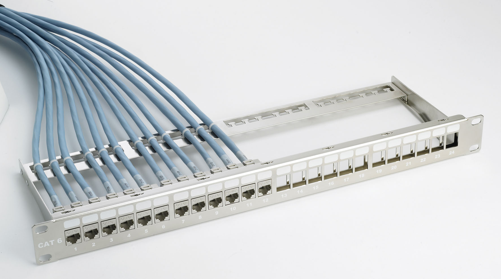

¿Que son los componentes pasivos en la red?
Es un componente electrónico que solo puede recibir energía, que puede disipar, absorber o almacenar en un campo eléctrico o magnético.

RJ45
es un conector que se utiliza para conectar a redes dispositivos mediante un cable que puede ser de hasta 8 hilos en su interior
Jacks o Keystones
Un conector Keystone es un conector hembra para montar una variedad de conectores eléctricos de bajo voltaje o conectores ópticos en una placa de pared de Keystone, placa frontal, caja de montaje en superficie o un panel de conexión.

Cable UTP
El cable UTP es el que se encarga de transmitir información de manera rápida y eficaz y se utiliza para redes domésticas y conexiones cortas.